library(tidyverse)
library(lubridate)
library(readxl)
library(zoo)
library(tseries)
library(forecast)
library(lmtest)
library(stats)
library(quantmod)
library(vars)
library(car)3 Analysis of SNB policy rates and Swiss inflation rates
3.1 Data evaluation & preparation
3.1.1 libraries
3.1.2 Load data
policy_rate_data <- read_excel("../data/snb-data-snbgwdzid-en-all-20250414_1000.xlsx",
col_types = c("text", "numeric", "numeric", "numeric", "numeric", "numeric", "numeric", "numeric"),
skip = 21)
inflation_data <- read_excel("../data/snb-data-plkoprinfla-en-all-20250422_0900.xlsx",
skip = 14) #skipping the first 14 rows3.1.3 First trial analysis using dataset 1
various data types available in various time windows, initial analysis using dataset 1 as described in [4. Data selection process](#selection)
pr_full <- policy_rate_data %>%
as_tibble() %>%
dplyr::select(date = "Overview",
policy = "SNB policy rate",
ir_above = "Interest rate on sight deposits above threshold",
sar_fix = "SARON fixing at the close of the trading day",
special = "Special rate (Liquidity-shortage financing facility)") %>%
mutate(date = ymd(date),
(across(c(policy, ir_above, sar_fix, special),
~ round(as.numeric(.), 2)))
)
ggplot(pr_full, aes(x = date)) +
geom_line(aes(y = policy, color = "Policy Rate")) +
geom_line(aes(y = ir_above, color = "Interest rate above threshold")) +
geom_line(aes(y = sar_fix, color = "SARON fixing")) +
geom_line(aes(y = special, color = "Special rate")) +
scale_color_manual(values = c("Policy Rate" = "blue",
"Interest rate above threshold" = "green",
"SARON fixing" = "brown",
"Special rate" = "red")) +
labs(title = "Swiss Policy Rates: Available data",
color = "Legend",
y = "(Policy-Rates") +
theme_minimal() +
theme(legend.position = "bottom", legend.direction = "horizontal") 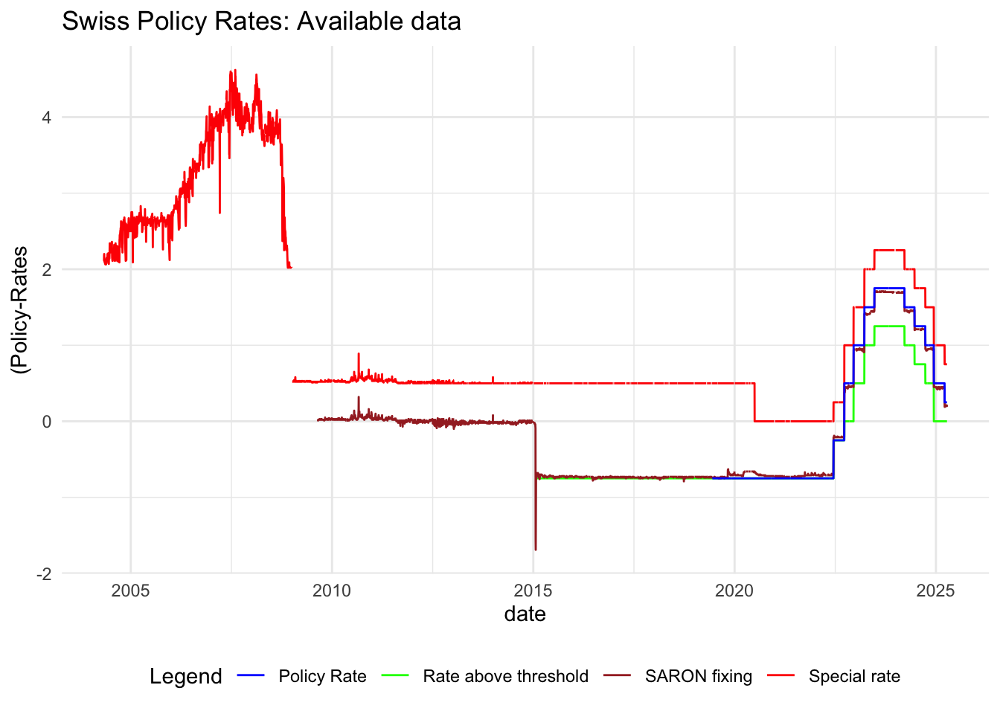
3.1.4 Average of 3 month Libor upper/lower limits as proxy for missing SNB policy rate data before 2020.
libor_data <- suppressWarnings(
read_excel("../data/snb-target rate-policy rate-2000-2025.xlsx",
range = cell_limits(c(18, 1), c(NA, 4)),
col_names = c("date", "policy_rate", "libor_3m_low", "libor_3m_high"),
col_types = c("text", "numeric", "numeric", "numeric")) %>%
mutate(date = ymd(str_c(date, "-01")),
(across(c(policy_rate, libor_3m_low, libor_3m_high),
~ round(as.numeric(.), 2))),
libor_3m_avg = (libor_3m_low + libor_3m_high) / 2) %>%
mutate(libor_3m_avg = round(libor_3m_avg, 2))
)
ggplot(libor_data, aes(x = date)) +
geom_line(aes(y = policy_rate, color = "Policy Rate")) +
geom_line(aes(y = libor_3m_low, color = "libor_3m_lower")) +
geom_line(aes(y = libor_3m_high, color = "libor_3m_upper")) +
geom_line(aes(y = libor_3m_avg, color = "libor_3m_avg")) +
scale_color_manual(values = c("Policy Rate" = "blue",
"libor_3m_lower" = "green",
"libor_3m_upper" = "brown",
"libor_3m_avg" = "lightblue")) +
labs(title = "Swiss Policy Rates, 3 Month Libor lower and upper limits",
color = "Legend",
y = "(Policy-Rates") +
theme_minimal() +
theme(legend.position = "bottom", legend.direction = "horizontal") 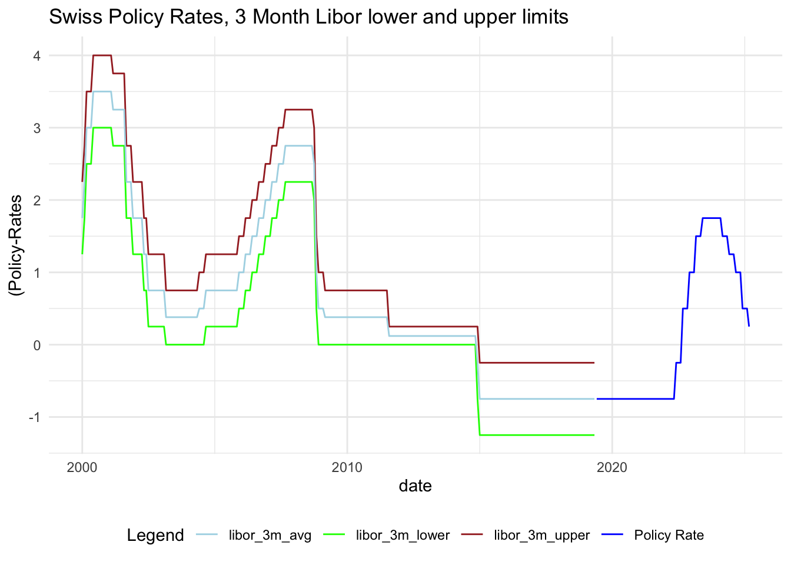
3.1.5 Further data preparation, data merge and timeseries object
pr <- libor_data %>%
mutate(
policy_rate = if_else(
date < as.Date("2019-06-01"),
libor_3m_avg,
policy_rate)) %>%
dplyr::select(date, policy_rate)
infl <- inflation_data %>%
as_tibble() %>%
dplyr::select(date = Overview, infl = `SNB - Core inflation, trimmed mean`) %>%
mutate(date = ymd(str_c(date, "-01")), # add a '-01' to the date string before making it a date
infl = as.numeric(infl),
infl = round(infl, 1))
# merge data
df <- inner_join(pr, infl, by = "date") # merge the two tibbles
# convert df to a zoo time series object
df_ts <- zoo(
df %>% dplyr::select(-date),
order.by = df$date
)3.1.6 Final look at the data we use for analysis
ggplot(df, aes(x = date)) +
geom_line(aes(y = policy_rate, color = "SNB Policy Rate")) +
geom_line(aes(y = infl, color = "SNB - Core inflation, trimmed mean")) +
scale_color_manual(values = c("SNB Policy Rate" = "blue",
"SNB - Core inflation, trimmed mean" = "red")) +
labs(title = "Swiss Policy Rates and Inflation Rates 2000-2025",
color = "Legend",
y = "(Inflation- / Policy-) Rates") +
theme_minimal() +
theme(legend.position = "bottom", legend.direction = "horizontal")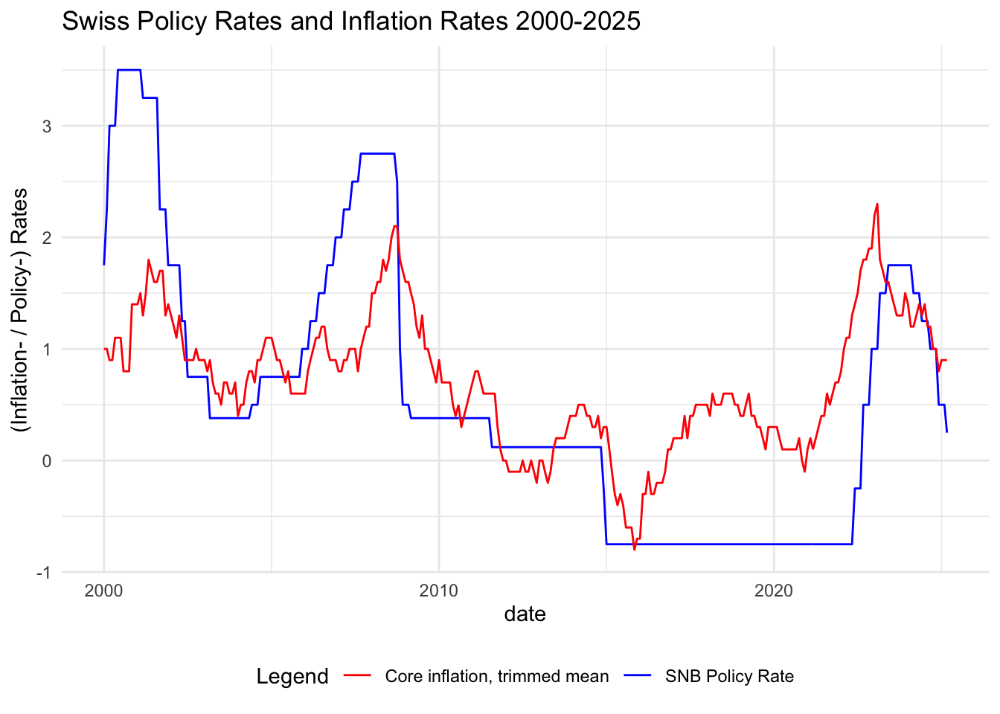
3.2 Stationarity & linear regression models
3.2.1 Stationarity
Both series are not stationary.
adf.test(na.omit(df_ts$policy_rate))
Augmented Dickey-Fuller Test
data: na.omit(df_ts$policy_rate)
Dickey-Fuller = -3.0722, Lag order = 6, p-value = 0.1244
alternative hypothesis: stationaryadf.test(na.omit(df_ts$infl))
Augmented Dickey-Fuller Test
data: na.omit(df_ts$infl)
Dickey-Fuller = -2.8432, Lag order = 6, p-value = 0.2209
alternative hypothesis: stationaryTake first differences of the series and check again
df_differenced <- diff(df_ts)
adf.test(na.omit(df_differenced$policy_rate))
Augmented Dickey-Fuller Test
data: na.omit(df_differenced$policy_rate)
Dickey-Fuller = -5.1719, Lag order = 6, p-value = 0.01
alternative hypothesis: stationaryadf.test(na.omit(df_differenced$infl))
Augmented Dickey-Fuller Test
data: na.omit(df_differenced$infl)
Dickey-Fuller = -4.9773, Lag order = 6, p-value = 0.01
alternative hypothesis: stationaryBoth series are stationary now.
3.2.2 Correlations
Very week positive correlation.
cor(df_differenced$policy_rate, df_differenced$infl, use = "pairwise.complete.obs")[1] 0.06351183.2.3 Basic Linear regression model
Linear regression of policy_rate on inflation shows no significant coefficients and R squared is very low.
lin_reg <- lm(infl ~ policy_rate, data = df_differenced)
summary(lin_reg)
Call:
lm(formula = infl ~ policy_rate, data = df_differenced)
Residuals:
Min 1Q Median 3Q Max
-0.52421 -0.09991 0.00009 0.10009 0.60009
Coefficients:
Estimate Std. Error t value Pr(>|t|)
(Intercept) -8.974e-05 7.395e-03 -0.012 0.990
policy_rate 4.860e-02 4.409e-02 1.102 0.271
Residual standard error: 0.1285 on 300 degrees of freedom
Multiple R-squared: 0.004034, Adjusted R-squared: 0.0007139
F-statistic: 1.215 on 1 and 300 DF, p-value: 0.27123.2.4 Residual analysis
3.2.4.1 Residual plot
The plot shows large residuals, confirming the low R squared.
resid <- lin_reg$residuals
plot(y=resid, x=as.Date(time(df_differenced)), ylab="Residuals", xlab="Year", type="l", main="Regression Residuals")
grid()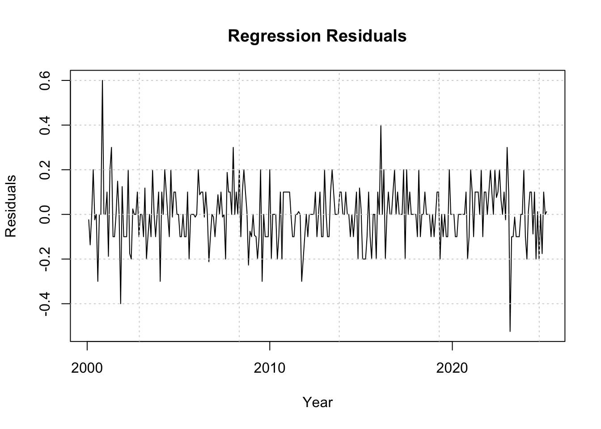
3.2.4.2 Breusch-Pagan test
Breusch-Pagan test for Constant variance, with null hypothesis that Residuals are homoscedastic shows, that there is no significant evidence of heteroskedasticity in the linear regression model.
bptest(lin_reg)
studentized Breusch-Pagan test
data: lin_reg
BP = 0.20106, df = 1, p-value = 0.65393.2.4.3 Shapiro test for normality
Shapiro test for normality with null hypothesis that Residuals are normally distributed shows a strong rejection of the null hypothesis: The residuals of the model are NOT normally distributed. With n = 302 we might disregard non-normality.
shapiro.test(resid)
Shapiro-Wilk normality test
data: resid
W = 0.93868, p-value = 7.332e-103.2.4.4 Visual check for outliers and influencial points
plot(lin_reg, which = 1) # Residuals vs Fitted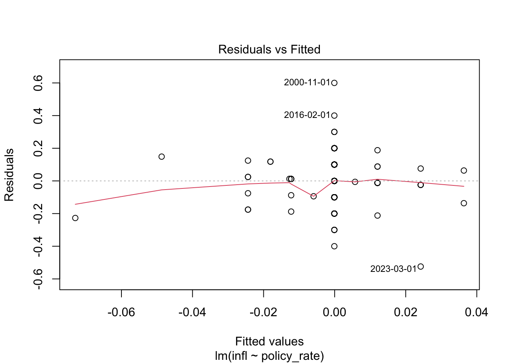
plot(lin_reg, which = 2) # Q-Q plot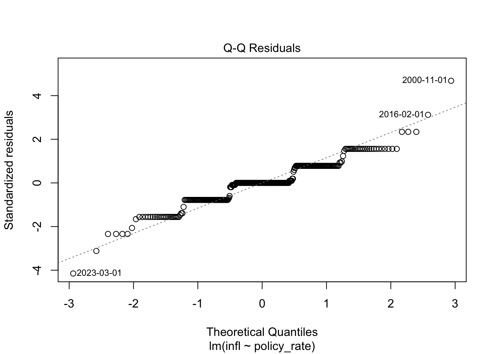
plot(lin_reg, which = 4) # Cook's distance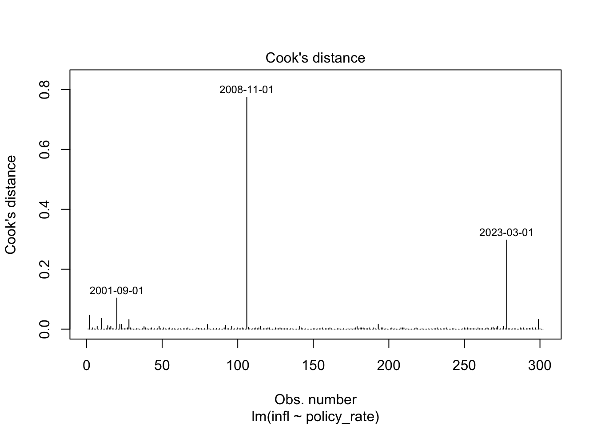
3.2.4.5 Durbin-Watson test for serial correlation
Durbin-Watson test for serial correlation with null hypothesis that Residuals are not autocorrelated results in a test statistic that is very close to 2, which is the expected value under the null hypothesis of no autocorrelation: p > 0.05: There is no statistically significant evidence of positive autocorrelation in the residuals.
dwtest(lin_reg)
Durbin-Watson test
data: lin_reg
DW = 2.0417, p-value = 0.6373
alternative hypothesis: true autocorrelation is greater than 03.2.5 Alternatives to the basic linear model
3.2.5.1 Alternative 1: Lead-lag relation: infl(t) = a + b * policy_rate(t-1) + e(t)
Create lagged variables
df_differenced$policy_rate_lag1 <- stats::lag(df_differenced$policy_rate, k = 1)
df_differenced$policy_rate_lag2 <- stats::lag(df_differenced$policy_rate, k = 2)
df_differenced$policy_rate_lag3 <- stats::lag(df_differenced$policy_rate, k = 3)
df_differenced$policy_rate_lag4 <- stats::lag(df_differenced$policy_rate, k = 4)
df_differenced$policy_rate_lag5 <- stats::lag(df_differenced$policy_rate, k = 5)
df_differenced$policy_rate_lag6 <- stats::lag(df_differenced$policy_rate, k = 6)
df_differenced$policy_rate_lag7 <- stats::lag(df_differenced$policy_rate, k = 7)
df_differenced$policy_rate_lag8 <- stats::lag(df_differenced$policy_rate, k = 8)
df_differenced$policy_rate_lag9 <- stats::lag(df_differenced$policy_rate, k = 9)
df_differenced$policy_rate_lag10 <- stats::lag(df_differenced$policy_rate, k = 10)
df_differenced$policy_rate_lag11 <- stats::lag(df_differenced$policy_rate, k = 11)
df_differenced$policy_rate_lag12 <- stats::lag(df_differenced$policy_rate, k = 12)Fit the linear model, removing rows with NA due to lagging.
lin_reg_lagged <- lm(infl ~ policy_rate_lag1 + policy_rate_lag2 + policy_rate_lag3 +
policy_rate_lag4 + policy_rate_lag5 + policy_rate_lag6 +
policy_rate_lag7 + policy_rate_lag8 + policy_rate_lag9 +
policy_rate_lag10 + policy_rate_lag11 + policy_rate_lag12,
data = na.omit(df_differenced))
summary(lin_reg_lagged)
Call:
lm(formula = infl ~ policy_rate_lag1 + policy_rate_lag2 + policy_rate_lag3 +
policy_rate_lag4 + policy_rate_lag5 + policy_rate_lag6 +
policy_rate_lag7 + policy_rate_lag8 + policy_rate_lag9 +
policy_rate_lag10 + policy_rate_lag11 + policy_rate_lag12,
data = na.omit(df_differenced))
Residuals:
Min 1Q Median 3Q Max
-0.48931 -0.09963 -0.00025 0.08991 0.48523
Coefficients:
Estimate Std. Error t value Pr(>|t|)
(Intercept) 0.0002487 0.0075422 0.033 0.9737
policy_rate_lag1 0.1118330 0.0505080 2.214 0.0276 *
policy_rate_lag2 0.0617822 0.0527645 1.171 0.2426
policy_rate_lag3 -0.1021098 0.0524807 -1.946 0.0527 .
policy_rate_lag4 0.0095258 0.0554855 0.172 0.8638
policy_rate_lag5 -0.0091973 0.0558748 -0.165 0.8694
policy_rate_lag6 0.0851385 0.0557948 1.526 0.1282
policy_rate_lag7 0.0284712 0.0556422 0.512 0.6093
policy_rate_lag8 -0.0275253 0.0558752 -0.493 0.6227
policy_rate_lag9 0.0230595 0.0553549 0.417 0.6773
policy_rate_lag10 -0.1169032 0.0526436 -2.221 0.0272 *
policy_rate_lag11 0.0447757 0.0528974 0.846 0.3980
policy_rate_lag12 -0.0583718 0.0520051 -1.122 0.2627
---
Signif. codes: 0 '***' 0.001 '**' 0.01 '*' 0.05 '.' 0.1 ' ' 1
Residual standard error: 0.1275 on 277 degrees of freedom
Multiple R-squared: 0.06249, Adjusted R-squared: 0.02187
F-statistic: 1.539 on 12 and 277 DF, p-value: 0.11Lag 1 and lag 10 are significant (p-value < 0.05), but R squared (0.06249, adjusted 002187) is very low.
We are not sure if a lag of 10 months makes sense from a logical point of view.
Lag 1 would make sense and the model shows that it is statistically significant.
But the direction of lag 1 is not as expected: higher policy rate goes with higher inflation.
Overall we are not convinced by this model.
3.2.5.2 Alternative 2: Treat SNB actions as events
df_differenced$event_2008_10 <- ifelse(index(df_differenced) >= as.Date("2008-10-01"), 1, 0)
df_differenced$event_2014_11 <- ifelse(index(df_differenced) >= as.Date("2014-11-01"), 1, 0)
df_differenced$event_2020_01 <- ifelse(index(df_differenced) >= as.Date("2020-07-01"), 1, 0)
df_differenced$event_2022_05 <- ifelse(index(df_differenced) >= as.Date("2022-05-01"), 1, 0)
df_differenced$event_2022_10 <- ifelse(index(df_differenced) >= as.Date("2022-10-01"), 1, 0)
lin_reg_events <- lm(infl ~ event_2008_10 + event_2014_11 + event_2020_01 + event_2022_05 + event_2022_10, data = na.omit(df_differenced))
summary(lin_reg_events)
Call:
lm(formula = infl ~ event_2008_10 + event_2014_11 + event_2020_01 +
event_2022_05 + event_2022_10, data = na.omit(df_differenced))
Residuals:
Min 1Q Median 3Q Max
-0.46667 -0.07671 0.00441 0.08942 0.58942
Coefficients:
Estimate Std. Error t value Pr(>|t|)
(Intercept) 0.01058 0.01246 0.849 0.39659
event_2008_10 -0.03386 0.01940 -1.746 0.08194 .
event_2014_11 0.01888 0.02141 0.882 0.37876
event_2020_01 0.04987 0.03116 1.600 0.11065
event_2022_05 0.09455 0.06294 1.502 0.13419
event_2022_10 -0.17333 0.06423 -2.699 0.00738 **
---
Signif. codes: 0 '***' 0.001 '**' 0.01 '*' 0.05 '.' 0.1 ' ' 1
Residual standard error: 0.127 on 284 degrees of freedom
Multiple R-squared: 0.04497, Adjusted R-squared: 0.02816
F-statistic: 2.675 on 5 and 284 DF, p-value: 0.02213The last event 2022_10 is significant. This was a month after the SNB had increased their policy rate from negative (-0.25) to positive (+0.50). But R squared is very low.
3.3 Excursus: Closer look at inflation only (auto/direct correlations and an ARIMA model)
3.3.1 Correlations
3.3.1.1 Autocorrelations
The series shows weak to moderate positive autocorrelation at lags 4 and 6, and a negative autocorrelation at lag 12. The inflation changes (infl) today are somewhat positively related to those 4, and 6 months ago. But inflation 12 months ago tends to move in the opposite direction from today’s.
acf(coredata(na.omit(df_differenced$infl)), lag.max = 12)
3.3.1.2 Direct correlations
Direct correlation between a time series and lag k, controlling for all shorter lags (1 to k−1).
pacf(coredata(na.omit(df_differenced$infl)), lag.max = 12)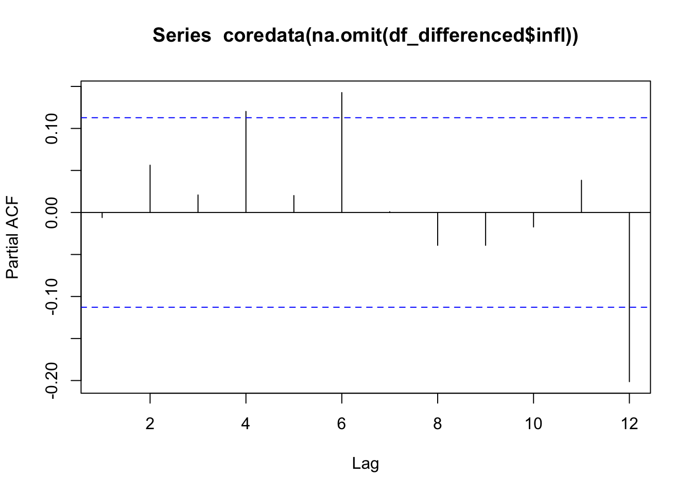
3.3.1.3 Rule of thumb regarding ARIMA parameters q and p
Use acf() to choose the q in MA(q) models. -> q = 4 or 6 Use pacf() to choose the p in AR(p) models. -> p = 4 or 6
The ACF and PACF plots suggest that the series may be modeled as an ARMA(4,4) or AR(6,6).
3.4 Akaike information criterion: AIC
Identifying the orders p and q of the ARIMA(p,1,q)-model by testing different model specifications. We only allow a maximum of six AR- and MA-terms and set the order of integration d to 1.
max.order <- 6
d <- 1Defining the matrix in which the values of the AICs for different model specifications are stored. Then calculating and storing the AICs for different model specifications.
arima_aic <- matrix(NA, ncol=max.order+1, nrow=max.order+1)
row.names(arima_aic) <- c(0:max.order) # Order of AR(p) in rows
colnames(arima_aic) <- c(0:max.order) # Order of MA(q) in columns
for(i in 0:max.order){
for(j in 0:max.order){
arima_aic[i+1,j+1]<-Arima(y=df_differenced$infl, order=c(i,d,j), include.constant = FALSE)$aic
}
}
arima_aic 0 1 2 3 4 5 6
0 -168.6189 -371.3014 -369.3014 -367.3014 -365.3014 -363.3014 -361.3014
1 -247.5208 -369.3014 -367.3014 -365.3014 -363.3014 -361.3014 -359.3014
2 -359.4566 -368.0223 -365.3015 -363.3014 -361.3014 -359.3014 -357.3014
3 -365.0392 -365.8290 -363.2961 -361.3014 -359.3013 -357.3014 -355.3014
4 -358.5969 -364.3533 -361.7275 -359.6208 -357.3013 -355.3014 -353.3016
5 -348.3162 -366.2311 -359.6077 -357.3880 -355.4800 -353.3025 -351.4714
6 -403.2342 -390.8695 -362.8963 -355.4723 -353.3884 -351.3918 -349.3954index <- which(arima_aic == min(arima_aic), arr.ind = TRUE)
ar <- as.numeric(rownames(arima_aic)[index[1]])
ma <- as.numeric(colnames(arima_aic)[index[2]])
c(ar, ma)[1] 6 0arima_aic[ar+1, ma+1][1] -403.2342Interpretation: The optimal ARMA-model is ARMA(6,0) with an AIC of -398.5921. (d according to order of integration.
3.5 ARIMA model
Convert to ts object from zoo and estimate the optimal ARIMA-model (incl. testing for significance of the coefficients)
infl_diff_ts <- ts(coredata(df_differenced$infl), frequency = 12)
arima <- Arima(y=infl_diff_ts, order=c(ar,d,ma), include.constant = FALSE)
print(arima)Series: infl_diff_ts
ARIMA(6,1,0)
Coefficients:
ar1 ar2 ar3 ar4 ar5 ar6
-0.9255 -0.7922 -0.6760 -0.4535 -0.3323 -0.0867
s.e. 0.0574 0.0761 0.0851 0.0854 0.0766 0.0581
sigma^2 = 0.01758: log likelihood = 183.41
AIC=-352.81 AICc=-352.43 BIC=-326.86coeftest(arima)
z test of coefficients:
Estimate Std. Error z value Pr(>|z|)
ar1 -0.925475 0.057449 -16.1095 < 2.2e-16 ***
ar2 -0.792221 0.076102 -10.4100 < 2.2e-16 ***
ar3 -0.675997 0.085097 -7.9438 1.960e-15 ***
ar4 -0.453496 0.085392 -5.3107 1.092e-07 ***
ar5 -0.332307 0.076583 -4.3392 1.430e-05 ***
ar6 -0.086676 0.058142 -1.4908 0.136
---
Signif. codes: 0 '***' 0.001 '**' 0.01 '*' 0.05 '.' 0.1 ' ' 1Interpretation: ar1 to ar5 are highly significant at the 95% confidence interval. The negative values of the coefficients reveals that a positive change in the time series in the previous period leads to a negative change in the subsequent period.
arima_5_1_0 <- Arima(infl_diff_ts, order=c(5,1,0))
print(arima_5_1_0)Series: infl_diff_ts
ARIMA(5,1,0)
Coefficients:
ar1 ar2 ar3 ar4 ar5
-0.9034 -0.7592 -0.6229 -0.3871 -0.2539
s.e. 0.0557 0.0731 0.0775 0.0731 0.0559
sigma^2 = 0.01765: log likelihood = 182.3
AIC=-352.6 AICc=-352.31 BIC=-330.35coeftest(arima_5_1_0)
z test of coefficients:
Estimate Std. Error z value Pr(>|z|)
ar1 -0.903417 0.055721 -16.2131 < 2.2e-16 ***
ar2 -0.759246 0.073087 -10.3882 < 2.2e-16 ***
ar3 -0.622855 0.077532 -8.0335 9.472e-16 ***
ar4 -0.387099 0.073149 -5.2919 1.210e-07 ***
ar5 -0.253930 0.055930 -4.5401 5.622e-06 ***
---
Signif. codes: 0 '***' 0.001 '**' 0.01 '*' 0.05 '.' 0.1 ' ' 1The ARIMA(5,1,0) is superior with one coefficient less. So we proceed with this.
As this is just an Excursus, not helping to identify the relations between policy rates and inflation, we skip here the evaluation of residuals. But we do a forecasting of inflation just based on this ARIMA model anyway.
3.5.1 Forecast the next 12 months of inflation
forecast_arima <- forecast(arima_5_1_0, h = 12)
print(forecast_arima) Point Forecast Lo 80 Hi 80 Lo 95 Hi 95
Mar 26 -0.084298236 -0.2545725 0.08597602 -0.3447102 0.1761138
Apr 26 -0.011199785 -0.1822664 0.15986681 -0.2728236 0.2504240
May 26 -0.050704287 -0.2237561 0.12234749 -0.3153641 0.2139556
Jun 26 0.007383639 -0.1679378 0.18270509 -0.2607474 0.2755147
Jul 26 -0.027998335 -0.2100036 0.15400694 -0.3063514 0.2503547
Aug 26 -0.022421557 -0.2085356 0.16369249 -0.3070584 0.2622153
Sep 26 -0.040046216 -0.2375923 0.15749983 -0.3421668 0.2620744
Oct 26 -0.018774470 -0.2190504 0.18150149 -0.3250701 0.2875212
Nov 26 -0.029137767 -0.2333571 0.17508154 -0.3414642 0.2831887
Dec 26 -0.018122481 -0.2263109 0.19006591 -0.3365192 0.3002742
Jan 27 -0.028048428 -0.2415563 0.18545943 -0.3545805 0.2984837
Feb 27 -0.024748471 -0.2424099 0.19291293 -0.3576329 0.3081359forecast_arima$mean # Point forecasts Jan Feb Mar Apr May
26 -0.084298236 -0.011199785 -0.050704287
27 -0.028048428 -0.024748471
Jun Jul Aug Sep Oct
26 0.007383639 -0.027998335 -0.022421557 -0.040046216 -0.018774470
27
Nov Dec
26 -0.029137767 -0.018122481
27 forecast_arima$lower # Lower bounds (80% and 95%) 80% 95%
Mar 26 -0.2545725 -0.3447102
Apr 26 -0.1822664 -0.2728236
May 26 -0.2237561 -0.3153641
Jun 26 -0.1679378 -0.2607474
Jul 26 -0.2100036 -0.3063514
Aug 26 -0.2085356 -0.3070584
Sep 26 -0.2375923 -0.3421668
Oct 26 -0.2190504 -0.3250701
Nov 26 -0.2333571 -0.3414642
Dec 26 -0.2263109 -0.3365192
Jan 27 -0.2415563 -0.3545805
Feb 27 -0.2424099 -0.3576329forecast_arima$upper # Upper bounds (80% and 95%) 80% 95%
Mar 26 0.08597602 0.1761138
Apr 26 0.15986681 0.2504240
May 26 0.12234749 0.2139556
Jun 26 0.18270509 0.2755147
Jul 26 0.15400694 0.2503547
Aug 26 0.16369249 0.2622153
Sep 26 0.15749983 0.2620744
Oct 26 0.18150149 0.2875212
Nov 26 0.17508154 0.2831887
Dec 26 0.19006591 0.3002742
Jan 27 0.18545943 0.2984837
Feb 27 0.19291293 0.3081359autoplot(forecast_arima) +
ggtitle("ARIMA Forecast for Inflation") +
xlab("Time") + ylab("Inflation Change")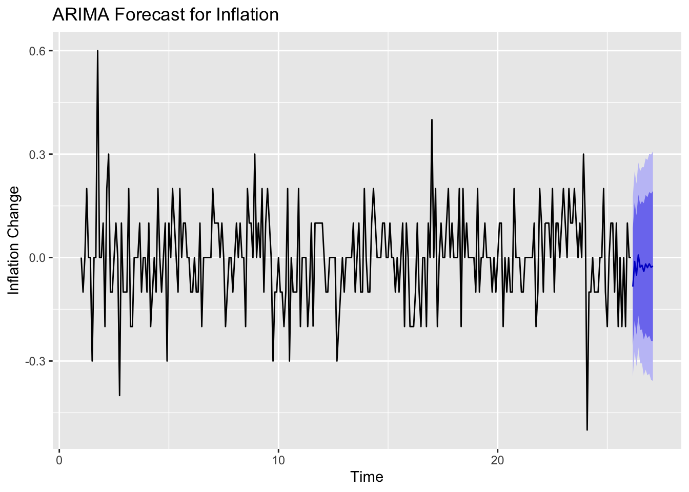
3.5.1.1 Last known and forecasted inflation levels
last_infl <- tail(na.omit(df$infl), 1)
forecast_changes <- forecast_arima$mean
forecast_inflation <- cumsum(forecast_changes) + last_infl
forecast_upper <- cumsum(forecast_arima$upper[,2]) + last_infl
forecast_lower <- cumsum(forecast_arima$lower[,2]) + last_inflGet the last date from indexed too object and generate 12 monthly forecast dates
last_date <- tail(index(df_differenced), 1)
forecast_dates <- seq(from = as.Date(last_date) %m+% months(1), by = "month", length.out = 12)Forecast table and plot.
forecast_table <- data.frame(
Date = forecast_dates,
Forecast_Inflation = round(as.numeric(forecast_inflation), 3),
Forecast_Change = round(as.numeric(forecast_arima$mean), 3),
Lower_95 = round(forecast_arima$lower[,2], 3),
Upper_95 = round(forecast_arima$upper[,2], 3)
)
print(forecast_table) Date Forecast_Inflation Forecast_Change Lower_95 Upper_95
1 2025-04-01 0.816 -0.084 -0.345 0.176
2 2025-05-01 0.805 -0.011 -0.273 0.250
3 2025-06-01 0.754 -0.051 -0.315 0.214
4 2025-07-01 0.761 0.007 -0.261 0.276
5 2025-08-01 0.733 -0.028 -0.306 0.250
6 2025-09-01 0.711 -0.022 -0.307 0.262
7 2025-10-01 0.671 -0.040 -0.342 0.262
8 2025-11-01 0.652 -0.019 -0.325 0.288
9 2025-12-01 0.623 -0.029 -0.341 0.283
10 2026-01-01 0.605 -0.018 -0.337 0.300
11 2026-02-01 0.577 -0.028 -0.355 0.298
12 2026-03-01 0.552 -0.025 -0.358 0.308ggplot(forecast_table, aes(x = Date, y = Forecast_Inflation)) +
geom_line(color = "blue", linewidth = 1) +
geom_point(color = "blue") +
labs(
title = "Forecasted Inflation Levels",
x = "Date",
y = "Inflation Rate (%)"
) +
theme_minimal()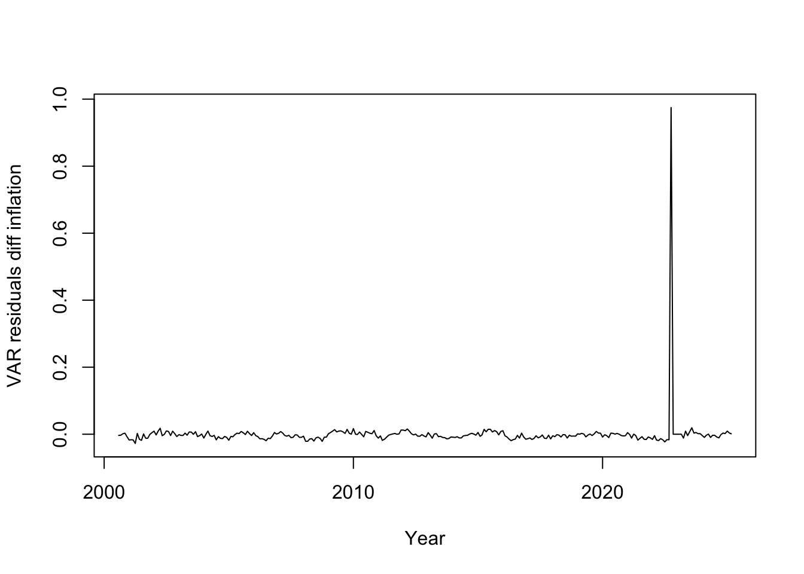
After this extensive Excursus we now go back our main topic, explaining interactions between SNB policy rates and inflation rates in Switzerland.
3.6 Vector autoregression and Granger causality
3.6.1 Do policy rates explain inflation rates?
VAR_model <- VAR(cbind(df_differenced$policy_rate, df_differenced$infl) , ic="AIC", lag.max = 12)
# coeftest(VAR_model)
# summary(VAR_model)
causality(VAR_model, cause="df_differenced.policy_rate")["Granger"]$Granger
Granger causality H0: df_differenced.policy_rate do not Granger-cause
df_differenced.infl
data: VAR object VAR_model
F-Test = 2.8265, df1 = 4, df2 = 578, p-value = 0.02424The Granger Causality Test (VAR) examines whether past policy rates help predict current values of inflation beyond what’s already explained by past values of inflation itself.
There is statistically significant evidence that past policy rates Granger-cause inflation, i.e., policy rates have predictive power for inflation in our model. But remember: Granger causality is not proof of true causation, it only indicates predictive ability.
3.6.2 Do inflation rates explain policy rates?
causality(VAR_model, cause="df_differenced.infl")["Granger"]$Granger
Granger causality H0: df_differenced.infl do not Granger-cause
df_differenced.policy_rate
data: VAR object VAR_model
F-Test = 1.2403, df1 = 4, df2 = 578, p-value = 0.2926No: Inflation rates do not Granger-cause the policy rates.
3.6.3 Does the “SNB event in September 2022” explain inflation rates.
VAR_df <- na.omit(cbind(df_differenced$event_2022_10, df_differenced$infl))
colnames(VAR_df) <- c("event_2022_10", "infl")
VAR_model <- VAR(VAR_df , ic="AIC", lag.max = 12)
coeftest(VAR_model)
t test of coefficients:
Estimate Std. Error t value Pr(>|t|)
event_2022_10:(Intercept) 0.0034847 0.0035938 0.9696 0.3330589
event_2022_10:event_2022_10.l1 0.9835028 0.0594264 16.5499 < 2.2e-16 ***
event_2022_10:infl.l1 0.0166767 0.0271886 0.6134 0.5401252
event_2022_10:event_2022_10.l2 0.0020321 0.0832146 0.0244 0.9805350
event_2022_10:infl.l2 0.0421153 0.0271638 1.5504 0.1221586
event_2022_10:event_2022_10.l3 -0.0024969 0.0832247 -0.0300 0.9760864
event_2022_10:infl.l3 0.0192806 0.0267348 0.7212 0.4713950
event_2022_10:event_2022_10.l4 0.0035873 0.0836355 0.0429 0.9658179
event_2022_10:infl.l4 0.0198585 0.0268170 0.7405 0.4596005
event_2022_10:event_2022_10.l5 -0.0059441 0.0837218 -0.0710 0.9434495
event_2022_10:infl.l5 0.0386697 0.0269170 1.4366 0.1519277
event_2022_10:event_2022_10.l6 0.0218920 0.0609708 0.3591 0.7198196
event_2022_10:infl.l6 -0.0045400 0.0270938 -0.1676 0.8670456
infl:(Intercept) 0.0022383 0.0075788 0.2953 0.7679574
infl:event_2022_10.l1 0.0503928 0.1253204 0.4021 0.6879055
infl:infl.l1 -0.0126927 0.0573363 -0.2214 0.8249624
infl:event_2022_10.l2 -0.0897124 0.1754857 -0.5112 0.6095930
infl:infl.l2 0.0554753 0.0572840 0.9684 0.3336588
infl:event_2022_10.l3 0.3052153 0.1755070 1.7390 0.0831136 .
infl:infl.l3 0.0087977 0.0563792 0.1560 0.8761085
infl:event_2022_10.l4 -0.1937597 0.1763734 -1.0986 0.2728864
infl:infl.l4 0.1150805 0.0565527 2.0349 0.0427903 *
infl:event_2022_10.l5 -0.6153546 0.1765553 -3.4853 0.0005695 ***
infl:infl.l5 0.0035575 0.0567634 0.0627 0.9500713
infl:event_2022_10.l6 0.5141070 0.1285772 3.9984 8.143e-05 ***
infl:infl.l6 0.1409905 0.0571364 2.4676 0.0141935 *
---
Signif. codes: 0 '***' 0.001 '**' 0.01 '*' 0.05 '.' 0.1 ' ' 1causality(VAR_model, cause="event_2022_10")["Granger"]$Granger
Granger causality H0: event_2022_10 do not Granger-cause infl
data: VAR object VAR_model
F-Test = 4.232, df1 = 6, df2 = 566, p-value = 0.0003524There is strong evidence that event_2022_10 Granger-cause inflation (at lag 5 and lag6). This means, that the SNB policy rate change in autumn 2022 influenced the Swiss inflation rates.
We now do a residual analysis based on the last VAR model with Event_2022_10 to check the quality of the model.
Resid_VAR <- resid(VAR_model)
p <- VAR_model$p
residual_dates <- tail(index(df_differenced), -p) # Remove first p dates
plot(x = residual_dates,
y = Resid_VAR[,1], # First equation's residuals
type = "l",
ylab = "VAR residuals diff log inflation",
xlab = "Year")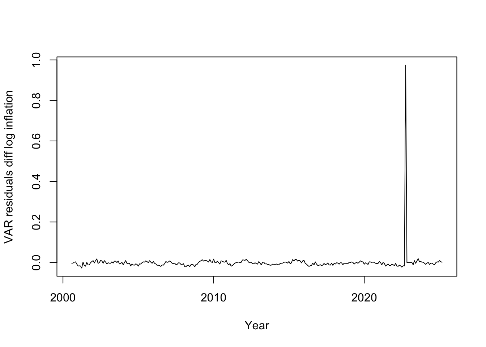
# Plotting ACF, histogram, and Q-Q-plot of residuals
acf(data.frame(Resid_VAR), main="VAR residuals diff log inflation") # ACF of residuals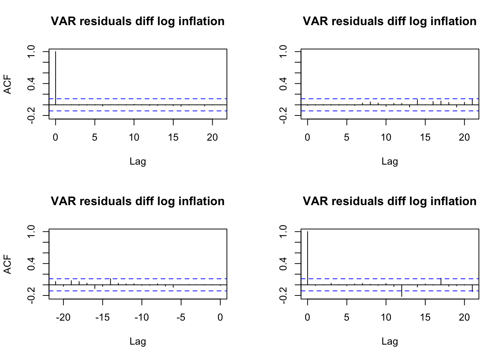
hist(Resid_VAR, breaks=25, main="Histogram of residuals", xlab="VAR residuals diff log inflation") # Histogram of residuals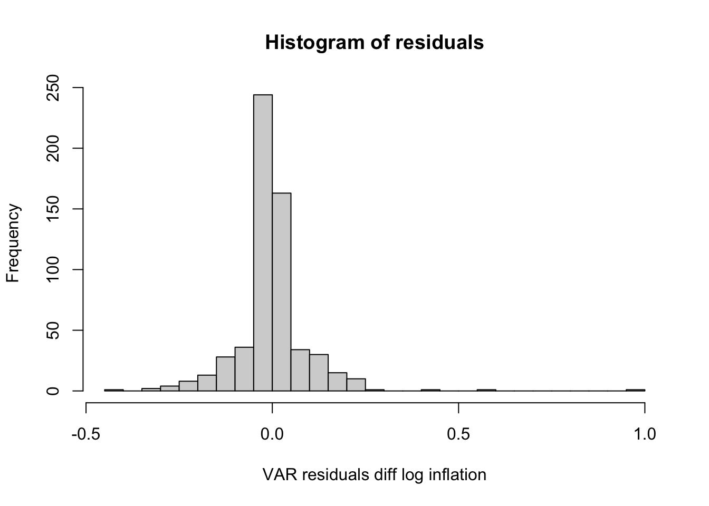
# For a single equation's residuals (e.g., first variable)
residuals_to_plot <- Resid_VAR[,1] # Select first column
# 1. Q-Q plot with grid
qqnorm(residuals_to_plot, main = "Q-Q Plot of VAR Residuals")
qqline(residuals_to_plot, col = "red")
grid()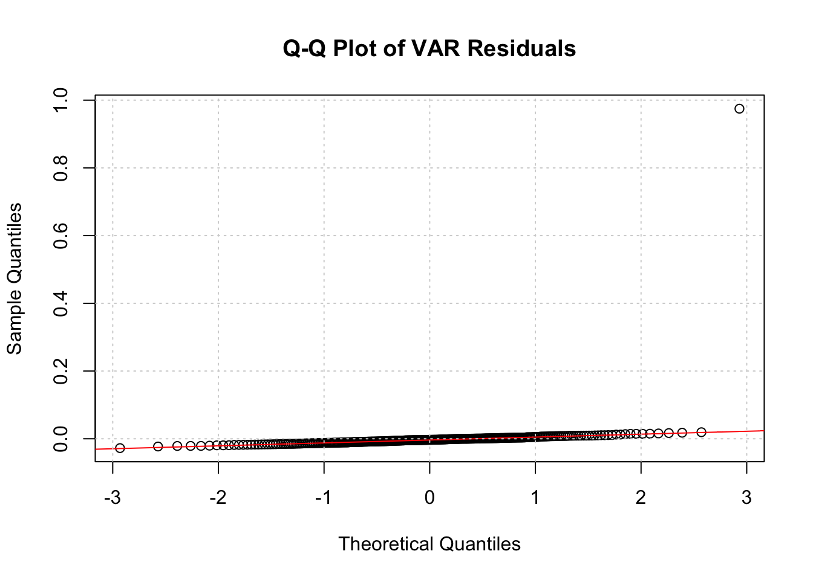
# Residual tests
arch.test(VAR_model) # ARCH-LM test for constant variance, null hypothesis = Residuals are homoscedastic
ARCH (multivariate)
data: Residuals of VAR object VAR_model
Chi-squared = 53.988, df = 45, p-value = 0.1685normality.test(VAR_model) # Jarque-Bera test for normality, null hypothesis = Residuals are normally distributed$JB
JB-Test (multivariate)
data: Residuals of VAR object VAR_model
Chi-squared = 968505, df = 4, p-value < 2.2e-16
$Skewness
Skewness only (multivariate)
data: Residuals of VAR object VAR_model
Chi-squared = 13520, df = 2, p-value < 2.2e-16
$Kurtosis
Kurtosis only (multivariate)
data: Residuals of VAR object VAR_model
Chi-squared = 954985, df = 2, p-value < 2.2e-16serial.test(VAR_model) # Portmanteau test (default) for serial correlation, null hypothesis = Residuals are not autocorrelated
Portmanteau Test (asymptotic)
data: Residuals of VAR object VAR_model
Chi-squared = 30.849, df = 40, p-value = 0.8502The ARCH-LM test for constant variance with the null hypothesis that residuals are homoscedastic shows with a p-value of 0.1685, that residuals are homoscedastic.
The Jarque-Bera test for normality with the null hypothesis that residuals are normally distributed shows with a p-value close to zero, that residuals are not normally distributed.
The Portmanteau test for serial correlation with the null hypothesis that residuals are not autocorrelated shows with a p-value of 0.8502, that the residuals are not autocorrelated.
Overall interpretation of residual analysis:
The non-normality remains an issue. It might be neglected as we have 302 observations (large n tends towards normality).
The peak of the residuals around (see plot above) is another issue, that needs to be further investigated. Is it related to the significant Granger-causality of the event_2022_10 on inflation?